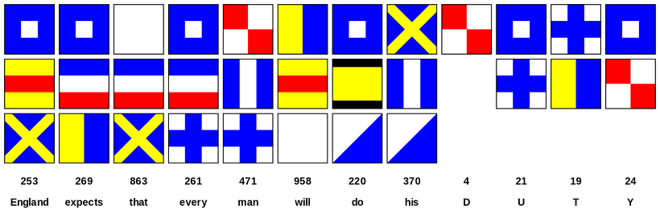
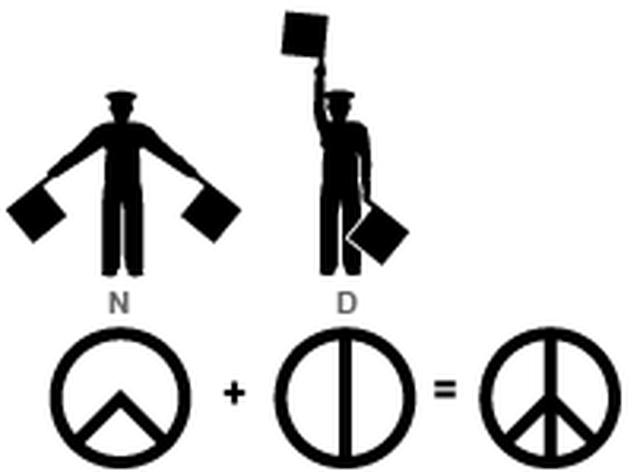

넬슨의 메시지 - 나폴레옹 시대의 통신
게시: 2017-06-01T23:32:57+09:00
호메로스의 일리아드를 보면, 아가멤논 같은 왕이 다른 왕에게 명령을 전달할때, 전령에게 어떠어떠한 내용을 전달하라는 말을 구두로 전합니다. 그러면 전령은 전장 속을 누비며 달려가서 그 내용을 역시 구두로 전달합니다. 여기서 우리가 알 수 있는 것은 바로, 예, 그렇습니다, 당시 그리스인들은, 적어도 왕이나 전령이나 까막눈이었다는 것이지요.
군대에서 복명복창하는 거 있쟎습니까 ? 사실 그거 꼭 군기잡으려고 하는 것이 아니라 상급자가 내린 지시를 다시 한번 확인하는 절차입니다. 특히 극심한 혼란과 흥분이 가득한 전투 상황에서는 이것이 매우 중요합니다. 함장은 50도 좌현으로 틀라고 했는데, 듣는 조타병이 잘못 알아듣고 15도 좌현으로 틀지 말란 보장이 없쟎습니까 ? 그러니까 복창이 필요합니다. 즉, 영어로 acknowledge하는 것이지요. Reply와 acknowledge는 다릅니다. Reply는 어떤 메시지에 답변을 하는 것이고, acknowledge는 그런 메시지를 받았다는 사실을 상대에게 알려주는 것입니다. 가령 1번함이 2번함에게 '우현에 적함 발견'이라는 신호를 보냈는데, 2번함이 acknowledge를 안 하면 1번함으로서는 2번함이 자기가 보낸 신호를 읽었는지 못읽었는지 알 방법이 없는 것입니다. 요즘 전투기끼리도 이런 것을 자주 주고 받는데, 톰 클랜시의 테크노 쓰릴러 소설을 읽어보면, 1번기 조종사가 뭔가 지시를 내리면, 2번기 조종사는 그냥 간략하게 acknowledge를 하기 위해 무전기 버튼을 클릭클릭 하는 장면이 나옵니다.
바로 근처에 있는 사람에게야 그렇게 구두로 해도 됩니다만, 전장 저 편에 있는 부대의 지휘관에게 아가멤논이 하던 식으로 전령에게 구두로 명령을 전달하면 곤란한 일이 많았습니다. 즉 다음과 같은 상황을 생각해볼 수 있습니다.
1. 전령이 흥분 속에서 정확한 명령을 전달하지 못할 수 있습니다. 가령 최선을 다해 적을 막으라는 것과 전멸해도 좋으니 후퇴는 금지 라는 것과는 많이 다르지요 ? 그런데도 당시 지휘관들은 애매모호한 문장의 명령을 많이 사용했다고 합니다. 그러니까 글자 그대로 토씨하나 안바꾸고 전달하는 것이 매우 중요합니다.
2. 전달받는 명령의 신뢰성을 보장할 수 없습니다. 사실 전장 속에서 누가 어떻게 죽을지도 모르는데, 항상 모든 지휘관에게 얼굴이 알려진 전령만 사용할 수는 없쟎습니까 ? 한참 유리한 상황에서 생판 처음보는 젊은 장교가 말을 타고 달려와서 '전원 후퇴'라고 명령을 전달할 때, 이걸 믿어야 할지 말아야 할지 의아해 할 것입니다.
3. 제일 문제가 되는 것은 전투가 끝나고 나서 최고 지휘관이 예하 지휘관에게 '너 왜 그때 내 명령대로 따르지 않고 그렇게 행동했냐' 하고 엉뚱한 소리를 하는 경우입니다. 이럴 때는 책임 소재를 분명히 할 명령서가 있어야 합니다.
따라서, 당시 전장터의 지휘관은 항상 연필(잉크와 깃털펜이 아닙니다)과 종이를 말안장에 넣고 다녔습니다. 무슨 명령을 내릴 때는 반드시 명령서를 즉석에서 써야 했던 것이지요.
육군에서는 이렇게 종이 쪽지 하나로 간단하게 해결이 되었습니다만, 문제는 해군이었습니다. 당시 무선이 있었던 것도 아니었고, 모르스 부호가 개발된 것도 아니었으므로, 기함에서 예하 군함들에게 신속하고 안정적으로 신호를 보내는 것이 매우 어려웠습니다. 이 문제를 해결하기 위해서, 해군은 낮에는 깃발 신호를, 밤에는 등불 신호를 사용했습니다.
깃발 신호는 영국 해군이 정말 고심을 해서 만든 훌륭한 신호 체계였습니다. 신호대에 올리는 깃발은 한번에 몇개씩의 다양한 색깔의 깃발 및 리본을 달았는데, 그 다양한 조합으로 광범위한 내용을 전달할 수 있었습니다.
배마다 신호 사관이 지정되어 있어서, 항상 기함이나 주변 다른 아군함에서 무슨 신호가 오지 않는지 계속 감시하고 있었습니다. 그러다가 기함에서 뭔가 깃발을 올리면 망원경으로, '기함으로부터 XXX함에게'라는 신호에 이어 어떤 내용이 오가는 지를 다 관찰하고 기록했습니다. 복잡한 코드집을 거의 다 외우고 있어야 했던 신호 사관의 스트레스를 짐작할 수 있쟎습니까 ?
대부분의 많이 사용되는 단어는 코드집에 규정되어 간단한 깃발로 표시가 가능했습니다만, 코드집에 없는 단어들도 일일이 알파벳 스펠링을 통해 모두 표시가 가능했습니다. 물론 이런 코드집은 해군의 극비 사항이었지요. 물론 프랑스군도 이런 깃발 표시를 사용했지만 그 코드는 서로 달랐던 거죠.
혼블로워 시리즈 중 'Commodore' 편을 보면, 혼블로워가 이끄는 소함대가 적 해안의 요새를 혼란시키기 위해 마치 뭔가 중대한 작전을 벌이는 것처럼 보여주려고 엉터리 깃발 신호를 잔뜩 주고 받는 장면이 묘사됩니다. 혼블로워는 약간의 유머 감각을 발휘해서, 휘하의 함장들에게 시인의 시를 깃발로 표현해서 보냅니다. 그런데 일부 함장은 이를 알아듣고 그 시인의 시 다음 구절을 깃발로 답신해 보내는데 비해, 약간 유머 감각이 떨어지는 함장들은 '무슨 소리냐 ? 못알아듣겠다, 다시 보내라'는 간단한 신호를 보내어 혼블로워를 실망시키는 장면이 있습니다. 이에 혼블로워는 이렇게 하면 자기 의도를 알아들을까 싶어서 '니네 배 수병 중에서 결혼한 30대 이상의 붉은 머리 수병의 숫자는 무엇이냐'를 깃발 신호로 보내는데, 그 유머 감각 없는 함장의 배에서는 한참 동안의 침묵 끝에 '3' 이라는 깃발 딱 하나를 올려 혼블로워를 절망에 빠뜨립니다.
트라팔가 해전에서의 넬슨 제독의 유명한 신호, 즉 '잉글랜드는 모두가 자신의 임무를 다할 것을 기대한다' ('England Expects that Every Man will do his Duty') 는 신호도 아주 단순한 몇개의 깃발만 올려서 구성이 가능했다고 합니다.
사실, 넬슨의 원래 문장은 다음과 같았다고 합니다. '넬슨은 모두가 자신의 임무를 다할 것이라고 자신한다' ('Nelson confides that every man will do his duty') 그런데, 넬슨의 메시지를 받은 신호 사관이 건의하기를, 넬슨이라는 단어와 confide라는 단어는 일일이 알파벳으로 신호를 날려야 하지만, 잉글랜드라는 단어와 expect라는 단어는 자주 사용되는 단어라서 코드집에 지정되어 있으므로, 그냥 깃발 하나씩으로 표시가 가능하므로, 그렇게 바꾸자고 했고 넬슨도 그렇게 하라고 허락해서 그런 메시지가 나갔다고 합니다. 넬슨은 항상 expect라는 강제적인 단어보다는 좀더 신사틱한 confide라는 단어를 더 좋아했다고 합니다. 그런데 정작 신호를 받는 많은 함선들의 신호 사관들은 이 문장을 이렇게 읽었다고 합니다. 'England expects every man to do his duty'
결국 한국말로 번역했을 때의 뜻은 변함이 없지만 영어의 어감은 약간 더 강압적이 되어버렸지요 ? 아무튼 넬슨의 묘에 새겨진 문장도 이 'England expects every man to do his duty'가 되어 버렸답니다.

그런데 군함과 아군 해안 요새와는 어떻게 신호를 주고 받았을까요 ? 이건 semaphore라는 신호대를 이용했습니다. 해군의 신호 사관이 육지의 신호대에 근무를 하면서, 해군의 깃발 신호를 읽어서 그를 다시 신호대의 신호로 변환하여 내륙의 다른 신호대에 보냈습니다. 이 semaphore라는 신호대는 두개의 긴 시계침 같은 팔이 달린, 커다란 전봇대 같은 거라고 생각하시면 됩니다. 당시 영국군 뿐만 아니라 프랑스군도 이런 신호대를 사용하여, 예전의 봉화대에 비해 훨씬 정확하고 신속하게 멀리까지 소식을 전했습니다. 웰링턴 공작이 워털루에서 나폴레옹을 격파한 뒤, 그 소식을 신속하게 영국 런던에 전달할 때도 이 신호대가 사용되었답니다. 그런데 로스차일드가 그 신호대의 사관을 매수하여 'Wellington defeated (Napoleon)'의 문장에서 Napoleon이라는 목적어를 빼먹게 함으로써 런던 주식 시장이 폭락한 틈에 막대한 차익을 남겼다는 믿거나 말거나 이야기도 있습니다.
이 semaphore라는 신호대는 이제 역사에서 완전히 사라져 버렸고, 지금은 semaphore라는 것이 전산 프로그램에서만 쓰이는 용어가 되었습니다. 그러나 여기서 유래한 유명한 사인이 있습니다. 바로 버트런드 러셀이 만든 평화의 기호입니다. 70년대 히피들이 아주 많이 사용했지요. 이 사인은 바로 N.D.라는 두글자를 신호대가 보내는 것을 합친 것입니다. 즉, 시계 바늘로 봤을 때 8시 20분이 N이고, 6시가 D입니다. 즉 Nuclear Disarmament, 핵무장 해제를 말하는 것입니다.
